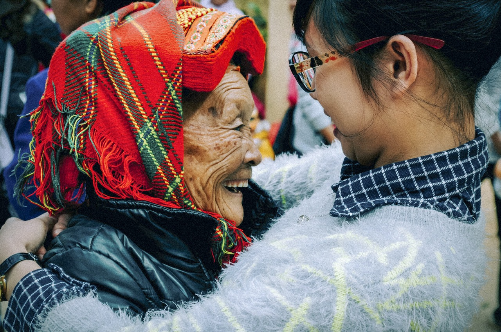
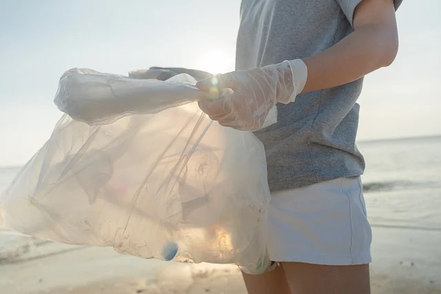

Nel 2016 il nostro fondatore Chris si trovava nella foresta amazzonica, quando tutto d'un tratto sentì un fortissimo boato proveniente da poco distante. Accorso sul luogo trovò davanti a sè una desolazione: il rumore che aveva pocanzi avvertito era stato generato dalla caduta indisciplinata di un albero, abbattuto dai tagliaboschi del governo brasiliano che stavano radendo al suolo tutto ciò che era costituito dalla legna. In quel momento Chris Formag capì che tutto quello che aveva visto nel suo viaggio nel Sud America non era accettabile e decise di contribuire nel suo piccolo per salvaguardare il patrimonio floristico e vegetazionale del nostro pianeta. Da quel momento in poi si parlerà non sporadicamente di Tum4World (definita da Chris stesso "la sua creatura"). Da quel 22 Agosto del 2016, Tum4World ha visto la luce e anche le stelle, dato che oggi è internazionalmente riconosciuta come una delle realtà di volontariato meglio riuscite e più affermate degli ultimi anni. Abbiamo infatti numerose sedi, centinaia di sedi in tutto il mondo, ma quella che noi prediligiamo (oltre a quella che puoi trovare in fondo ad ognuna delle nostre pagine!) è quella di Trento, in via della Riva. Tutto questo poichè Chris in età giovanile ha frequentato l'università proprio a Trento e questa città gli è rimasta nel cuore. Perciò, se sei interessato alla nostra missione e hai voglia di conoscerci dal vivo, vieni pure a trovarci in via della Riva a Tridentum!
 